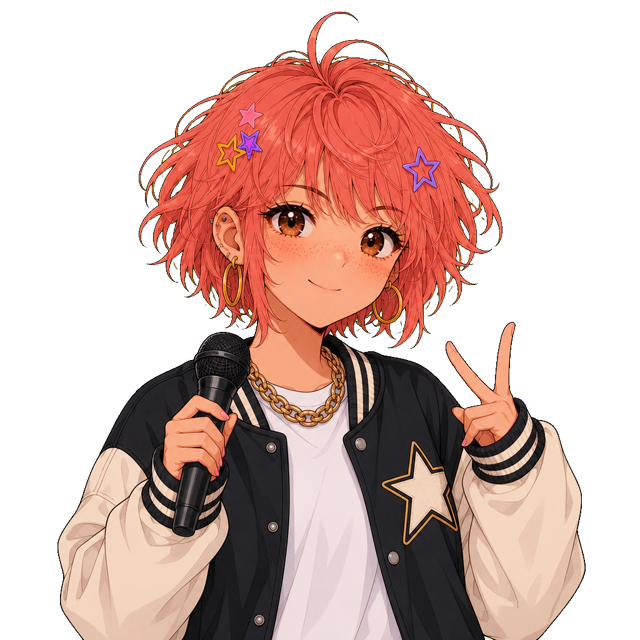
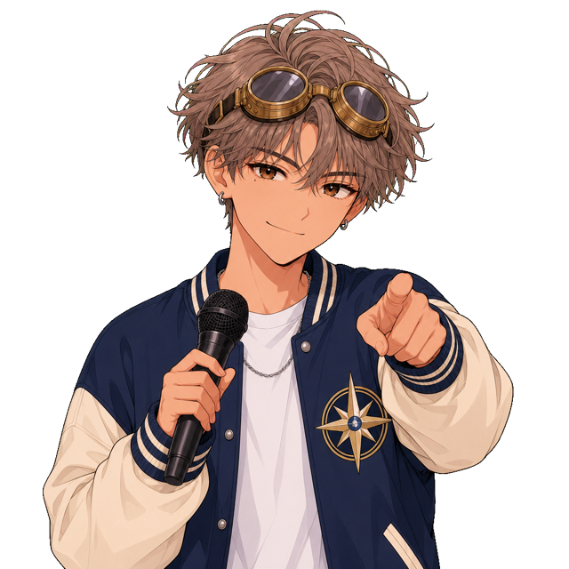
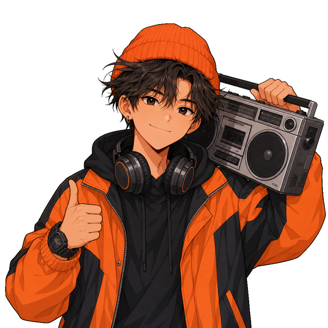

Show me the burger
손님이 랩으로 주문해요. 들으면서 바로 포스기에 찍으세요!



- 한 판에 손님 3팀 (혼자 오거나 둘이 와요)
- 손님이 인사하면 주문 시작을 눌러 랩을 들어요
- 다시 듣기는 손님마다 1번. 다시 듣고 맞히면 아슬아슬
- 랩이 끝나면 디스코드에서 손님에게 주문을 3번까지 되물을 수 있어요. 음성방에서 말하거나 #bot_text에 써요 ("치즈버거 두 개 맞죠?")
- 랩이 끝나면 시간 제한 없이 천천히 찍고 주문 완료를 눌러요
- "하나 더", "말고", "빼 주세요" 같은 함정을 조심!
손님 반응은 디스코드 음성방 bot_voice에서 들려요. 소리를 켜 주세요.